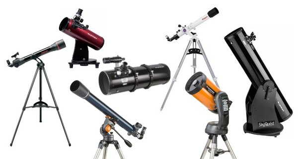
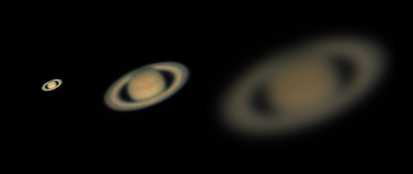
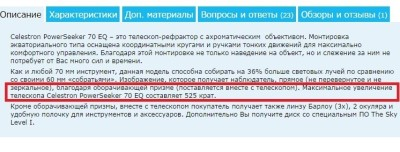
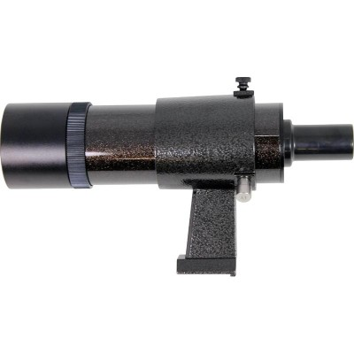
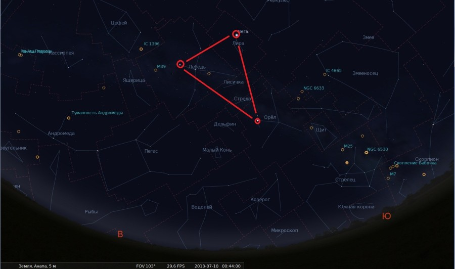

У меня появился телескоп. Что дальше?
Уважаемые новички, только что купившие телескоп! Часто слышу жалобы на мутную картинку и «ничего не видно!!!!!11!!!». Уважаемые новички, только что купившие телескоп! Часто слышу жалобы на мутную картинку и «ничего не видно!!!!!11!!!». Уважаемые новички, только что купившие телескоп! Часто слышу жалобы на мутную картинку и «ничего не видно!!!!!11!!!».
Уважаемые новички, только что купившие телескоп! Часто слышу жалобы на мутную картинку и «ничего не видно!!!!!11!!!». Уважаемые новички, только что купившие телескоп! Часто слышу жалобы на мутную картинку и «ничего не видно!!!!!11!!!». Уважаемые новички, только что купившие телескоп! Часто слышу жалобы на мутную картинку и «ничего не видно!!!!!11!!!».
Уважаемые новички, только что купившие телескоп! Часто слышу жалобы на мутную картинку и «ничего не видно!!!!!11!!!». Уважаемые новички, только что купившие телескоп! Часто слышу жалобы на мутную картинку и «ничего не видно!!!!!11!!!». Уважаемые новички, только что купившие телескоп! Часто слышу жалобы на мутную картинку и «ничего не видно!!!!!11!!!».
Уважаемые новички, только что купившие телескоп! Часто слышу жалобы на мутную картинку и «ничего не видно!!!!!11!!!». Уважаемые новички, только что купившие телескоп! Часто слышу жалобы на мутную картинку и «ничего не видно!!!!!11!!!». Уважаемые новички, только что купившие телескоп! Часто слышу жалобы на мутную картинку и «ничего не видно!!!!!11!!!».
Телескоп, даже большой — это не такой инструмент, который наводишь наугад в любою точку ночного неба и видишь разноцветные туманности «как с Хаббла». Телескопом надо уметь пользоваться и, надеюсь, следующие мои советы помогут Вам быстрее получить удовольствие от наблюдений и погрузиться с головой в мир космоса.
Телескоп, даже большой — это не такой инструмент, который наводишь наугад в любою точку ночного неба и видишь разноцветные туманности «как с Хаббла». Телескопом надо уметь пользоваться и, надеюсь, следующие мои советы помогут Вам быстрее получить удовольствие от наблюдений и погрузиться с головой в мир космоса.
Телескоп, даже большой — это не такой инструмент, который наводишь наугад в любою точку ночного неба и видишь разноцветные туманности «как с Хаббла». Телескопом надо уметь пользоваться и, надеюсь, следующие мои советы помогут Вам быстрее получить удовольствие от наблюдений и погрузиться с головой в мир космоса.
Телескоп, даже большой — это не такой инструмент, который наводишь наугад в любою точку ночного неба и видишь разноцветные туманности «как с Хаббла». Телескопом надо уметь пользоваться и, надеюсь, следующие мои советы помогут Вам быстрее получить удовольствие от наблюдений и погрузиться с головой в мир космоса.
1. Определитесь с набором окуляров. Не ставьте сразу максимальное увеличение — наблюдения любого объекта всегда начинайте с минимальной кратности. Новичок обычно хочет попробовать, а что будет на 525х при наблюдении в 70мм телескоп. Далеко за примером ходить не надо — к неплохому телескопу Celestron 70 EQ в комплекте идет окуляр 20мм (35х), 4мм окуляр (175х) и 3х Барлоу (с 4мм окуляром получается 525х). Ну, 175х на 70мм рефракторе я еще понять могу (наблюдения Луны, например), но 525х вообще бесполезное увеличение.
 Более того, некоторые интернет-магазины могут ввести в заблужение новичка. Новичок читает, что «Максимальное увеличение телескопа Celestron PowerSeeker 70 EQ составляет 525 крат» и с довольной улыбкой начинает совать 3х Барлоу + 4мм окуляр в фокусер и видит темноту. Кстати, обычно комплектные Барлоу оптическим качеством не блещут и могу изрядко подпортить картинку, так что их можно сразу убрать в коробку (но не выкидывать — если разживетесь качественной линзой Барлоу, то из старой Барлоу можно выковырять линзу и использовать корпус в качестве разгонной втулки).
Кстати, обычно комплектные Барлоу оптическим качеством не блещут и могу изрядко подпортить картинку, так что их можно сразу убрать в коробку (но не выкидывать — если разживетесь качественной линзой Барлоу, то из старой Барлоу можно выковырять линзу и использовать корпус в качестве разгонной втулки).
Кстати, обычно комплектные Барлоу оптическим качеством не блещут и могу изрядко подпортить картинку, так что их можно сразу убрать в коробку (но не выкидывать — если разживетесь качественной линзой Барлоу, то из старой Барлоу можно выковырять линзу и использовать корпус в качестве разгонной втулки).
Кстати, обычно комплектные Барлоу оптическим качеством не блещут и могу изрядко подпортить картинку, так что их можно сразу убрать в коробку (но не выкидывать — если разживетесь качественной линзой Барлоу, то из старой Барлоу можно выковырять линзу и использовать корпус в качестве разгонной втулки).
ЧТО ДЕЛАТЬ? Подбирайте разумное увеличение. Запомните — для разных объектов применяют разное увеличение! Если в комплекте нет нужных окуляров — докупите. По выбору окуляров я написал отдельную статью: Ссылочка. Обычно нужен обзорный окуляр, окуляр для средних увеличений и планетный окуляр. Хорошая линза Барлоу также лишней не будет — например, такая: еще одна. Не обязательно сразу брать дорогущие окуляры за over 9000 рублей — обычные недорогие Плёсслы также будут неплохо показывать.
ЧТО ДЕЛАТЬ? Подбирайте разумное увеличение. Запомните — для разных объектов применяют разное увеличение! Если в комплекте нет нужных окуляров — докупите. По выбору окуляров я написал отдельную статью: Ссылочка. Обычно нужен обзорный окуляр, окуляр для средних увеличений и планетный окуляр. Хорошая линза Барлоу также лишней не будет — например, такая: еще одна. Не обязательно сразу брать дорогущие окуляры за over 9000 рублей — обычные недорогие Плёсслы также будут неплохо показывать.
ЧТО ДЕЛАТЬ? Подбирайте разумное увеличение. Запомните — для разных объектов применяют разное увеличение! Если в комплекте нет нужных окуляров — докупите. По выбору окуляров я написал отдельную статью: Ссылочка. Обычно нужен обзорный окуляр, окуляр для средних увеличений и планетный окуляр. Хорошая линза Барлоу также лишней не будет — например, такая: еще одна. Не обязательно сразу брать дорогущие окуляры за over 9000 рублей — обычные недорогие Плёсслы также будут неплохо показывать.
ЧТО ДЕЛАТЬ? Подбирайте разумное увеличение. Запомните — для разных объектов применяют разное увеличение! Если в комплекте нет нужных окуляров — докупите. По выбору окуляров я написал отдельную статью: Ссылочка. Обычно нужен обзорный окуляр, окуляр для средних увеличений и планетный окуляр. Хорошая линза Барлоу также лишней не будет — например, такая: еще одна. Не обязательно сразу брать дорогущие окуляры за over 9000 рублей — обычные недорогие Плёсслы также будут неплохо показывать.
2. Не наблюдайте через оконное стекло! Ни за что, никогда и ни в коем случае! Думаете, обычное оконное стекло обладает оптическим качеством?2. Не наблюдайте через оконное стекло! Ни за что, никогда и ни в коем случае! Думаете, обычное оконное стекло обладает оптическим качеством?2. Не наблюдайте через оконное стекло! Ни за что, никогда и ни в коем случае! Думаете, обычное оконное стекло обладает оптическим качеством?2. Не наблюдайте через оконное стекло! Ни за что, никогда и ни в коем случае! Думаете, обычное оконное стекло обладает оптическим качеством?2. Не наблюдайте через оконное стекло! Ни за что, никогда и ни в коем случае! Думаете, обычное оконное стекло обладает оптическим качеством?
2. Не наблюдайте через оконное стекло! Ни за что, никогда и ни в коем случае! Думаете, обычное оконное стекло обладает оптическим качеством?2. Не наблюдайте через оконное стекло! Ни за что, никогда и ни в коем случае! Думаете, обычное оконное стекло обладает оптическим качеством?2. Не наблюдайте через оконное стекло! Ни за что, никогда и ни в коем случае! Думаете, обычное оконное стекло обладает оптическим качеством?2. Не наблюдайте через оконное стекло! Ни за что, никогда и ни в коем случае! Думаете, обычное оконное стекло обладает оптическим качеством?2. Не наблюдайте через оконное стекло! Ни за что, никогда и ни в коем случае! Думаете, обычное оконное стекло обладает оптическим качеством?
ЧТО ДЕЛАТЬ? Откройте окно или лучше наблюдайте со двора/с темного места. Причем оконные наблюдения еще чреваты тем, что теплый воздух из комнаты начинает выходить и ухудшать изображение. С балконом тоже не всё сладко, от дома могут подниматься тепловые потоки и таки портить картинку.
Владельцы рефракторов пока могут отдохнуть, ибо в большинстве бюджетных моделей рефракторов юстировка не предусмотрена, а если и предусмотрена, то самому без необходимых знаний лезть в нее категорически не следует. Юстировка зеркально-линзовых моделей — это вообще отдельный разговор.
4. Выносите телескоп хотя бы за полчаса до наблюдений — оптика должна остыть! Неостывшая оптика будет выдавать вместо точечных звёзд и планет мыльцо и колбасню. Владельцы Ньютонов могут потратить это время с пользой — поюстировать оптику Кстати, есть миф, что рефракторам термостабилизация не нужна — фиг там! И рефракторы, и рефлекторы, и катадиоптрики нуждаются в остывании (особенно последние)! Дабы ускорить этот процесс, владельцы Ньютонов могут прилепить на главное зеркало обычный компьютерный кулер (он должен ДУТЬ на зеркало). Так время термостаба можно заметно сократить. Маленькие телескопы диаметром до 114мм остывают достаточно быстро и без дополнительного охлаждения.
5. Еще одна классическая ситуация. «Купил телескоп, наблюдаю в городе, галактик\туманностей не видно. Телескоп 150мм, Sky-Watcher BKP150750, Наверное, диаметр маловат?».
Ну, ответить на такое я могу лишь одно — берите телескоп и езжайте в темное место! Ибо в городе с засветкой не получится толком посмотреть ни туманности, ни галактики, ни шаровые скопления!
Если на небе есть Луна — тоже можете сразу забить на наблюдения дипскай-объектов. Наблюдайте Луну, планеты, двойные звёзды.
Даже в 50-60мм бинокль на темном небе можно увидеть практически весь каталог Мессье! Есть автомобиль? Замечательно! В новолуние погрузили телескоп и выехали куда-нибудь подальше, желательно к югу от города.
Некоторую помощь по ряду наблюдаемых объектов могут оказать узкополосные фильтры — например, OIII, однако это не панацея. Неплохи фильтры LPR, CLS и UHC-S — они заметно глушат засветку, однако и звёзды тоже заметно заглушаются.
ВНИМАНИЕ! ОБЯЗАТЕЛЬНО ТЕПЛО ОДЕВАЙТЕСЬ, ДАЖЕ ЛЕТОМ! НАХОДЯСЬ НА ХОЛОДЕ БЕЗ ДВИЖЕНИЯ, МОЖНО ТАК ПРОМЕРЗНУТЬ, ЧТО ПОТОМ НА ВСЮ ЖИЗНЬ ЗАПОМНИТЕ! ДАЖЕ ЛЕТОМ Я ОБЯЗАТЕЛЬНО БЕРУ ШАПКУ! НА ВЫЕЗДАХ НЕ БУДЕТ ЛИШНИМ ТЕРМОС С ЧАЕМ! БЕРЕГИТЕ СЕБЯ!
6. Чтобы увидеть слабые объекты, глазам необходимо привыкнуть к темноте. Если решили поохотиться на галактики,туманности и скопления — вырубайте весь свет, вооружайтесь слабым красным фонариком и только тогда наблюдайте. При наблюдениях слабых объектов учитесь наблюдать «боковым зрением» — то есть смотрите не на сам объект, а немного вбок — например, на соседнюю звезду. По очень слабым объектам неплохо работает легкое покачивание трубы телескопа — при смещении тусклый объект становится заметнее. Кто пользуется звёздными картами на телефонах и планшета — подсветку на минимум поставьте, в нормальных приложениях есть ночной режмим работы, когда сам экран становится красным (без пленки). Обычные фонари-фонарики не включаем. Полная адаптация к темноте длится примерно 30-40 минут, но уже через 10 минут Вы будете видеть гораздо больше, чем раньше. Если планируются наблюдения ярких объектов (например, планеты) — наблюдайте их в последнюю очередь.
7. Купите хороший искатель — 6х30 или 9х50. Как правило, комплектные искатели типа 5х24 или Red Dot не могут обеспечить хорошей видимости искомого объекта. Ну и, разумеется, не забудьте настроить его 🙂
8. Изучайте звёздное небо. Даже если у Вас нет телескопа, уже можно приступать! Установите на компьютер\планшет\телефон программу-планетарий — их нынче полно! Нужные программы
9. Любители лунно-планетных наблюдений — даже если Вы сделали юстировку телескопа и он достаточно остыл, то качество картинки может упереться еще и в земную атмосферу. В зависимости от состояния атмосферы вид планет в телескоп с хорошей оптикой может отличаться начиная от «колбасни и мыльца» до «четкого, как бритвой вырезанного». Правильно подбирайте увеличение — для наблюдения планет хороши увеличения от 1.5*D до 2*D, где D — диаметр объектива в мм. То есть для 100мм телескопа оптимальное планетное увеличение лежит в пределах от 150 до 200х. По Луне при спокойной атмосфере можно поставить чуть больше. Наблюдать планеты (да и вообще любые космические объекты) лучше тогда, когда они находятся на максимальной высоте над горизонтом, то есть когда проходят над южной частью неба.
Рекомендации: наблюдайте чаще. Ловите спокойную атмосферу. Как правило, если дуют сильные ветра, то на спокойную атмосферу «так называемый сиинг (от слова seeing)» рассчитывать не приходится, но и в штиль тоже может быть мыльная картинка. Лично я для ловли сиинга использую астрономический прогноз Meteoblue. Он иногда брешет, но всё же сэкономил мне уйму времени.
Если Ваш телескоп в черном списке — на планетные наблюдения особо не рассчитывайте. Самое простое, что я могу посоветовать — это сделать диафрагму на телескоп, уменьшив его апертуру в 1.5 раза — качество картинки на больших увеличениях должно улучшиться. Если есть вопросы — напишите мне, постараюсь помочь.